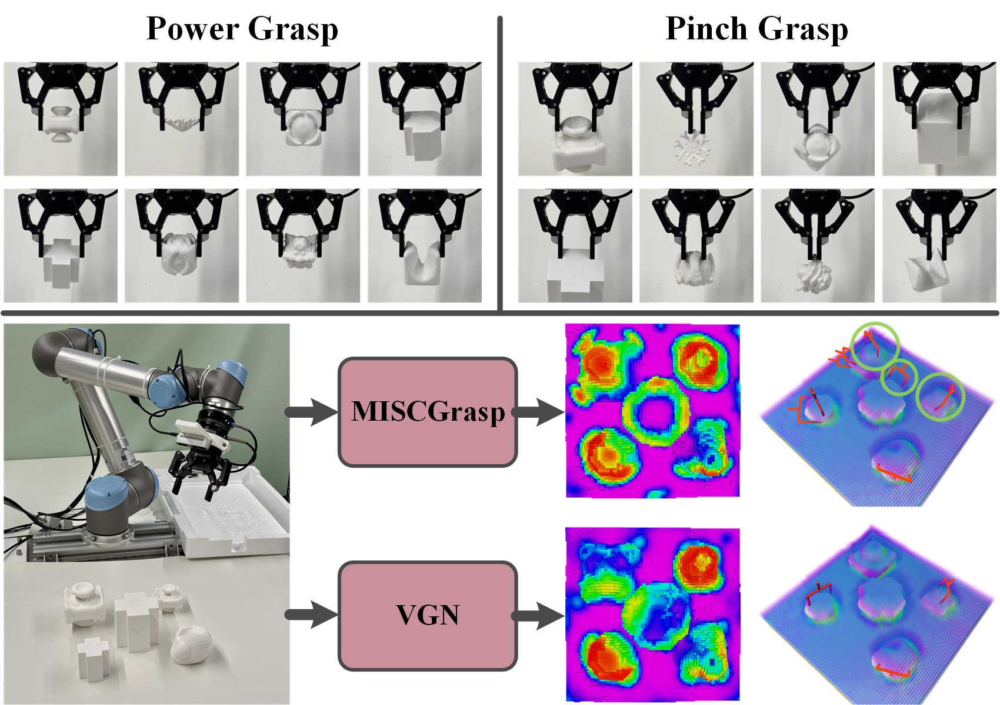
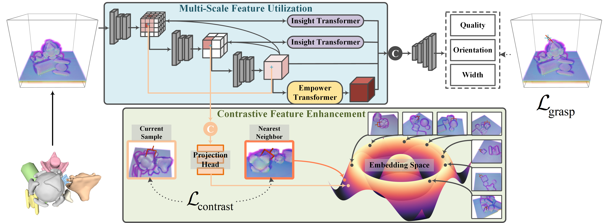

Robotic grasping faces challenges in adapting to objects with varying shapes and sizes. In this paper, we introduce MISCGrasp, a volumetric grasping method that integrates multi-scale feature extraction with contrastive feature enhancement for self-adaptive grasping. We propose a query-based interaction between high-level and low-level features through the Insight Transformer, while the Empower Transformer selectively attends to the highest-level features, which synergistically strikes a balance between focusing on fine geometric details and overall geometric structures. Furthermore, MISCGrasp utilizes multi-scale contrastive learning to exploit similarities among positive grasp samples, ensuring consistency across multi-scale features. Extensive experiments in both simulated and real-world environments demonstrate that MISCGrasp outperforms baseline and variant methods in tabletop decluttering tasks.

We conduct four grasping experiments using four object sets: the EGAD test set, the pile and packed test set, and the adversarial object set. These experiments focus on both pinch and power grasps across two scene type: Pile and Packed. The EGAD-Single experiment scales the EGAD test set to 147 objects, ranked by geometric complexity and grasp difficulty, and evaluates performance on easy, medium, and hard sets. The Pile-Pile and Packed-Packed experiments use the pile and packed test sets with 10 objects per scene, increasing complexity. The EGAD+Adv-Pile experiment combines the EGAD test set and adversarial object set to test pinch grasp in pile scenes with 10 objects per scene.
$\textbf{Visualization of EGAD+ADV-Pile}$
$\textbf{Visualization of Pile-Pile}$
$\textbf{Visualization of Packed-Packed}$
Our experimental platform uses a UR5 robotic arm with a Robotiq 2-Finger 85 gripper, and grasp planning is performed in a 0.4 × 0.4 × 0.4 m3 workspace, with perception from an Intel RealSense D435 depth sensor. We conduct both single-object and multi-object grasping experiments. Single-object tests involve five EGAD objects 3D-printed at three sizes (3 cm, 6 cm, 9 cm) for power and pinch grasps. Multi-object experiments include 9 EGAD objects, 14 Berkeley adversarial objects, 30 household items, and the single-object set, all tested in pile scenarios to optimize resources and time. Each test is repeated 20 times with 10 objects per round.
Thanks to the authors of VGN for making their work publicly available.
Also, thanks to Boce, the creator of OribitGrasp, for sharing screen recording tips.